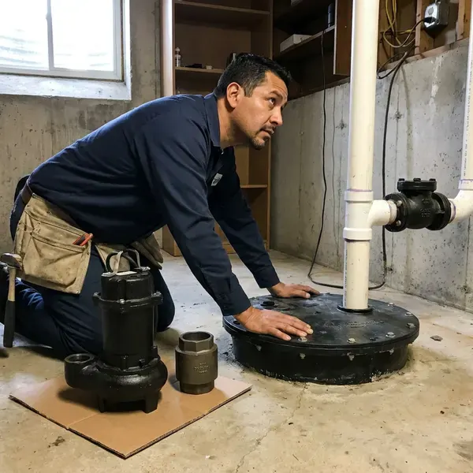
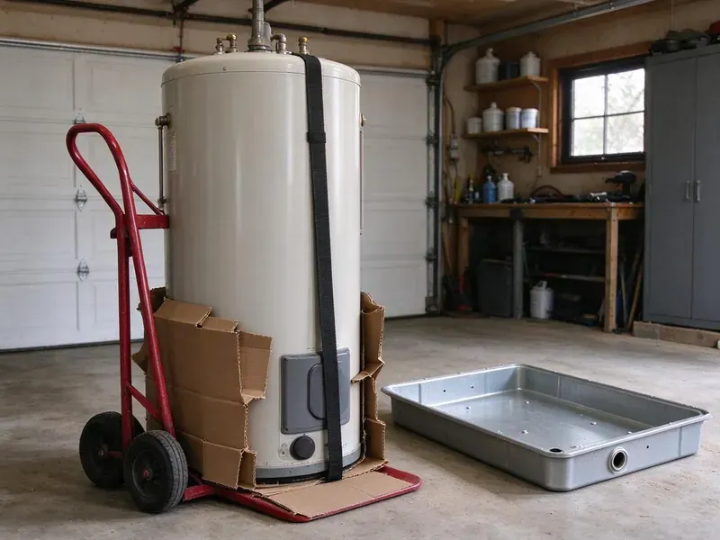

Sewage Ejector Pump Installation in New Martinsville, WV
For dependable sewage ejector pump installation in New Martinsville, WV, trust the experienced plumbers at GJK Plumbing to handle your specific needs.
- Licensed Sewer and Drain Plumbers
- Licensed West Virginia Plumbers
- Clear Pricing
- Fast, Reliable Installation

Make That Below-Grade Bathroom Happen in New Martinsville, WV.
Our plumbers size the pump to your fixtures and lift height so waste moves dependably every cycle.
Professional Sewage Ejector Pump Installation in New Martinsville, WV
GJK Plumbing installs sewage ejector pumps for any fixture that sits lower than your main sewer or septic line. We set a sealed basin below the floor, install a pump rated for solids, add a check valve and gate valve, and vent the basin through the roof. Every system is tested with water before we wrap up.
Our expertise includes:
- Precise pit excavation and basin placement.
- Proper sizing and wiring for new units.
- Sealed basin installation with gas-tight lids and dedicated venting

Additional Plumbing Installation Services in New Martinsville, WV
We install water heaters, pumps, lines, and fixtures across New Martinsville, WV with precision workmanship that meets every local code.


Customers
Why Choose GJK Plumbing for Sewage Ejector Pump Installation in New Martinsville, WV?
Choosing the right professionals for sewage ejector pump installation ensures long-term reliability and adherence to local plumbing codes. Our team at GJK Plumbing has extensive experience with these complex systems.
- Local Expertise, We understand West Virginia building codes and soil conditions, ensuring a compliant and durable installation.
- Reliable Brands, We install high-quality, durable sewage ejector pumps from trusted manufacturers known for their longevity.
- Quality Brands, We only install high-quality, reputable sewage ejector pump brands known for their reliability and performance.
Citywide Coverage
GJK Plumbing proudly serves every neighborhood in New Martinsville for sewage ejector pump installations. Whether you are in a historic district or a newer development, our licensed plumbers are ready to assist you.
Experienced Team
The team understands basin sizing, venting rules and discharge routing to the building drain. They also line up electrical and alarm wiring with your electrician.
Safety-First Approach
Pumps are wired to a dedicated, properly protected circuit and installed with a check valve and full-port shutoff. Permits and inspections are handled for every new ejector installation.
Trusted Certified New Martinsville Plumbing Services Professionals
At GJK Plumbing, we take pride in providing certified plumbing services throughout New Martinsville, WV. Backed by leading industry credentials, our experienced plumbers combine technical skill with genuine customer care. Whether it is repair, installation, or maintenance, we follow strict safety and quality standards to deliver lasting results you can trust.
Call Us Now PHCC Plumbing Contractor Recognition
PHCC Plumbing Contractor Recognition Better Business Bureau (BBB) Accreditation
Better Business Bureau (BBB) Accreditation Angi Certified Pro
Angi Certified Pro ISO 9001 Quality Management Certification
ISO 9001 Quality Management CertificationDependable Sewage Ejector Pump Installation Work in New Martinsville, WV
Grinder Pump Installation in New Martinsville
Where wastewater contains tougher solids, a grinder pump installation in New Martinsville may be necessary. Unlike standard ejector pumps, grinder pumps macerate waste into a fine slurry before pumping it to the sewer line. This is often required for certain commercial applications or residential setups with specific waste disposal needs. GJK Plumbing can help you determine if a grinder pump is the right solution, handling the entire installation from start to finish, including the specialized electrical and discharge piping.

Basement Bathroom Ejector Systems in New Martinsville
Basement bathrooms sit below the building sewer, so toilets, showers and sinks drain into a sealed basin instead of flowing by gravity. We excavate the floor, set a basin usually 30 to 50 gallons and connect each fixture drain. A solids-handling pump lifts waste up and into the main drain line. The basin lid is sealed and vented to keep odors out.
Sewage Ejector Pump Basin & Pit Installation in New Martinsville
The basin and pit are core components of any sewage ejector pump system. GJK Plumbing provides expert installation of the sewage ejector pump basin and pit in New Martinsville, with proper sizing and sealing. Correct pit depth and diameter are important for good pump operation and to prevent early wear. We also seal the basin properly to contain odors and keep groundwater out. Basements and crawlspaces are both common in West Virginia homes, and hillside lots often need careful planning for sewer and drain routing. A well-installed pit is essential to longevity.
Laundry and Wet Bar Ejector Pumps in New Martinsville, WV
Below-grade laundry rooms and wet bars produce gray water that still needs to be lifted to the sewer line. A smaller ejector or laundry tray pump can handle washer discharge and sink drainage. We install a lint filter where needed to guard the pump. These systems are compact and can usually be installed without major floor demolition.
Residential Sewage Ejector Pump Installation in New Martinsville
GJK Plumbing specializes in installing sewage ejector pumps for residential properties in New Martinsville. These pumps are crucial for basement bathrooms, laundry rooms or any plumbing fixtures located below the main sewer line. We make sure the pump's capacity matches your household's demands, preventing potential backups. Our service includes selecting the appropriate basin size, setting up proper venting and making solid electrical connections. We work with common residential pump brands like Liberty and Zoeller, known for their reliability.
Cost-Effective Sewage Ejector Pump Upgrades in New Martinsville, WV
If your existing sewage ejector pump is old, inefficient or undersized for your current needs, GJK Plumbing offers cost-effective upgrade options in New Martinsville, WV. Upgrading to a more powerful or energy-efficient model can save you money on utility bills and provide greater peace of mind. We assess your current system and recommend modern pumps with features like integrated alarms or longer warranties, making a smart investment that improves your home's plumbing and prevents future breakdowns. This can be more economical than repeated repairs.
Liberty Pumps Installation in New Martinsville
GJK Plumbing installs Liberty sewage ejector pumps in New Martinsville. Liberty Pumps is a trusted name in the industry, known for robust construction and reliable performance. We offer various models to suit different needs, from residential basement applications to light commercial use. Our technicians are experienced with Liberty's product line, so your new pump is installed to manufacturer specifications for efficiency and a long service life. We can help you choose the best Liberty model for your wastewater volume and lift requirements.

Commercial Sewage Ejector Pump Installation in New Martinsville, WV
For businesses in New Martinsville, WV with below-grade plumbing needs, GJK Plumbing provides commercial-grade sewage ejector pump installation. Commercial applications often require more powerful pumps and larger basins to handle higher volumes of wastewater and solids. We assess your business's particular requirements, from restaurants with grease traps to office buildings with multiple restrooms. Our installations are designed for heavy-duty use and compliance with commercial plumbing codes, minimizing downtime for your operation.
Sewage Ejector Pump Installation Near Me in New Martinsville, WV
When you search for 'sewage ejector pump installation near me' in New Martinsville, WV, GJK Plumbing is your reliable local choice. We take pride in quick response times and expert service right in your neighborhood. Our technicians are familiar with the typical plumbing challenges in this area.
If your ejector alarm is sounding and you are searching for sewage ejector pump installation near me, call us right away. We respond fast to pump failures and carry common pumps on our trucks. Fast service helps prevent backups and damage.
GJK Plumbing at a Glance
- Licensed and insured plumbers serving New Martinsville, WV
- 24/7 emergency service with same-day scheduling
- Clear written estimates, no hidden fees
- 4.8-star rated by 832+ West Virginia customers
New Martinsville Map
New Martinsville Information
- Population
- 5,087
- Area codes
- Local
- Service area
- New Martinsville and communities within 40 miles
- Nearby
- Moundsville, Wheeling, Clarksburg, Fairmont
In New Martinsville, WV, homes with basements or lower levels with plumbing need a dependable sewage ejector pump to prevent messy backups and keep wastewater moving, especially when heavy rain raises groundwater levels.
Expert Services
Trust our professionals for reliable GJK Plumbing solutions in New Martinsville, WV.
Our Specialized Plumbing Services in New Martinsville, WV
At GJK Plumbing, we provide a complete range of plumbing services across New Martinsville, WV. From leak detection to full system installations, our team ensures fast, precise, and affordable service for both residential and commercial properties. Explore our core services below:


How Our Sewage Ejector Pump Installation Process Works in New Martinsville, WV
At GJK Plumbing, we follow a clear and efficient process for sewage ejector pump installation to ensure a smooth and successful project.
Request a Quote
Call (681) 223-3607 or fill out our online form to schedule an appointment. We will discuss your needs and provide a straightforward, upfront estimate for your sewage ejector pump installation project.
Site Assessment
Our licensed plumber will visit your New Martinsville home to evaluate the installation site, determine the best pump type and size and plan for proper piping and electrical connections.
Professional Installation
We handle the complete installation, including excavation for the basin, setting the pump, connecting discharge lines, installing check and gate valves and confirming all electrical work meets code.
Frequently Asked Questions About Sewage Ejector Pump Installation in New Martinsville
The cost for sewage ejector pump installation in New Martinsville typically ranges from $2,500 to $5,000. This price can vary depending on the pump type, basin size, complexity of the plumbing and electrical work and whether an existing system needs to be removed. We provide a detailed quote after assessing your project.
Installing a sewage ejector pump is a complex job that involves plumbing, electrical and sometimes excavation work. It requires specialized knowledge to get sizing, venting and code compliance right. We strongly recommend hiring a licensed professional like GJK Plumbing to avoid costly errors, safety hazards and potential code violations.
Manufacturer warranties usually range from 1 to 5 years depending on the model. We also warranty our installation labor.
Regular maintenance for a sewage ejector pump involves occasionally checking the basin for debris, confirming the check valve works correctly and testing the float switch. It is also wise to avoid flushing non-biodegradable items. GJK Plumbing offers maintenance services to keep your pump running efficiently and prevent surprise breakdowns.
We recommend having your sewage ejector pump inspected annually, especially if it is in a high-use area. Regular inspections can catch potential issues early, extend the life of your pump and prevent unexpected failures and costly backups. This is especially important for older units.
Most ejector pumps last 7 to 10 years with normal use. Flushing wipes or other non-flushable items can shorten that life significantly.
Signs that you might need a new sewage ejector pump include unusual noises from the pump or pit, frequent cycling on and off, slow drainage from basement fixtures or a sewage odor coming from the area. If you notice any of these issues, it is best to have a professional check your system to prevent a complete failure and costly backups.
Avoid flushing wipes, paper towels, feminine products, grease and cat litter. These items clog pumps and cause early failure.
What People Are Saying About Our Plumbing Experts?

Robert G.
The trenchless sewer replacement saved our front yard. They walked us through the camera inspection footage first so we knew exactly what we were paying for.
Sewer Line Replacement · Moundsville, WVJames P.
Our commercial plumbing system had a leak under the sink, and GJK Plumbing handled it professionally. The plumbers arrived quickly and restored everything without disruption to our customers.
Commercial Plumbing · Vienna, WV
Patricia H.
We had a slab leak that two other companies could not find. GJK Plumbing located it in under an hour, explained our options, and the price matched the quote to the dollar.
Slab Leak Repair · Fairmont, WV
Sofia M.
Two new toilets installed in one visit, no mess left behind, and the tech even adjusted a faucet he noticed was dripping. Fair pricing and really friendly.
Toilet Installation · Clarksburg, WVLaura S.
I scheduled a water heater replacement, and the team made the process smooth and affordable. The new unit works perfectly, and they cleaned up after completing the job.
Water Heater Replacement · Moundsville, WV
Emily R.
I called GJK Plumbing for plumbing repair, and the technician was fast, polite, and thorough. They explained the problem clearly and fixed it the same day. I will definitely hire them again. Highly recommended!
Plumbing Repair · New Martinsville, WV